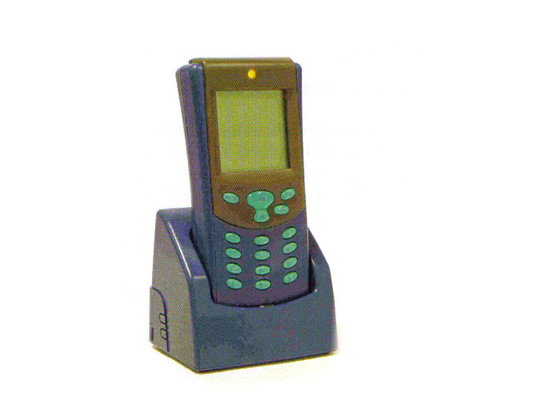

"Het testen is begonnen!" - alles over de OV-Chipkaart...
- dinsdag 09 december 2008 10:47
- Geschreven door Rik
Het zal niet lang meer duren voordat de eerste testreizigers gebruik gaan maken van de OV-Chipkaart. De planning is dat dit voorjaar de eerste testen afgenomen gaan worden. Een goede gelegenheid voor retmetro.nl om het gehele OV-Chipkaart-systeem aan de frequente metroreiziger- en hobbyist uit te leggen.
|
Inhoud
|
|
|---|---|
|
|
Doel van de OV-Chipkaart
De OV-chipkaart is een nieuw betaalmiddel om het openbaar vervoer veiliger te maken en makkelijker te gebruiken. Dit gebeurt door middel van plaatsing van poortjes (zodat reizigers niet zonder kaartje op het perron kunnen komen) op stations van metro en treinen en het plaatsen van speciale in-uitcheck apparatuur in overige openbaarvervoermiddelen. Nu zijn er nog verschillende kaartjes voor trein, tram, bus, metro en veerboot. Met de komst van de OV-chipkaart zullen deze verschillende kaarten gaan verdwijnen en ontstaat er een landelijk betaalsysteem voor het openbaar vervoer.
Het systeem achter de OV-Chipkaart
In dit nieuwsitem gaan we alleen in op de OV-chipkaart apparatuur van de Rotterdamse metro. Op de Rotterdamse metrostations worden poortjes geplaatst. Dit om te voorkomen dat mensen zonder kaartje gebruik kunnen maken van de metro. Per station zijn vele berekeningen gemaakt over het aantal poortjes dat geplaatst moet worden, en nog belangrijker: waar precies. Op een druk station worden vanzelfsprekend meer poortjes geplaatst dan op een minder druk station.

De toegangspoortjes die staan op de Rotterdamse metrostations, met uitzondering van de sneltramstations.
Werking van de poortjes
Zorg dat je een geldig vervoersbewijs bezit, waar voldoende saldo voor de reis op staat of een ander geldig reisproduct. Loop naar het poortje toe, en houdt de kaart voor het logo van de OV-Chipkaart. Een vriendelijke pieptoon zal aangeven dat de kaart geldig is, en de deuren in het poortje zullen zich openen in de looprichting. In het poortje zitten verschillende sensoren die registreren of het poortje gepasseerd is of niet. Na het passeren sluiten de deuren zich weer. Is de kaart niet geldig dan zal de poort een onvriendelijke pieptoon laten horen.
Met uitchecken gebeurt hetzelfde, echter dan wordt het reisbedrag afgeschreven. Beknelling tussen de deurtjes is niet mogelijk omdat er uit veiligheidsoverwegingen een openingsmarge van 15cm tussen de deuren zit. Tevens sluiten de deuren niet als zone 3 van de sensoren een object registreert (zoals hieronder afgebeeld).

1: Ingangzone. 2: doorloopzone, als er niet ingecheckt is zal er een harde zoemer aan gaan. 3: veiligheidszone, zijn de sensoren hier in werking, dan zullen de deuren zich niet sluiten. 4:uitgangszone, bevestigt dat de reiziger gepasseerd is.
Kaartlezer
Op de sneltramstations in de Prins Alexanderpolder worden géén poortjes geplaatst (met uitzondering van station Alexander). Dit is gedaan om gevaarlijke situaties te voorkomen. Wanneer men via de gelijkvloerse kruisingen en het spoor de poortjes omzeilt en zo toch op het perron komt, levert dit een gevaarlijke situatie op. Uiterst slecht voor de gezondheid als er net een sneltram passeert.
De kaartlezers werken hetzelfde als de poortjes, alleen kan men wel zonder in te checken doorlopen omdat er geen toegangspoortjes aanwezig zijn. Houdt de kaart voor de lezer, en deze zal door middel van tonen aangeven of de kaart geldig is of niet. Uitchecken werkt ook hier hetzelfde.

De kaartlezers welke op de sneltramstations in de Prins Alexanderpolder aanwezig zijn. Deze kaartlezers staan ook op plaatsen in metrostations waar geen ruimte is voor een toegangspoortje.
Calamiteiten
Op de stations kunnen zich altijd calamiteiten voordoen, zoals brand, een aanslag, enz. Veel mensen vragen zich af of met de komst van de poortjes ze opgesloten zullen worden in het station tijdens zo'n calamiteit. Dit is onjuist. Bij stroomuitval zullen de poortjes zich openen, met een noodaccu. Bij de poortjes komen zuilen te staan waarmee de poortjes ook geopend kunnen worden, door een ruitje in te slaan, en op een knop te drukken.
De poortjes worden verder geopend bij storingen. Men hoeft dus nooit bang te zijn voor opsluiting. De CVL en onderhoudspersoneel kunnen de poortjes ook centraal openen, bijvoorbeeld via het BMS-systeem (Beheer Metro Stations). Dit systeem wordt gebruikt voor het bedienen van stations op afstand, en vindt plaats met een computerprogramma vanaf de Centrale Verkeersleiding.
Op stations waar bij calamiteiten te weinig doorstroommogelijkheden aanwezig zijn voor een goede vluchtweg, als gevolg van de komst van de poortjes, zijn nooddeuren geplaatst. Deze deuren kunnen geopend worden door:
- een druk van 80 kilogram
- de bediening van het brandalarm
- stroomuitval of andere storingen
- een speciale sleutel

De nooddeur, geplaatst bij de testopstelling in de testruimte van station Oostplein.
Randapparatuur
De randapparatuur is een heel belangrijk onderdeel van het systeem. Je kan zeggen dat de poortjes en de kaartlezers de zintuigen van het systeem zijn, en de randapparatuur het hart en de hersenen. Hieronder behandelen we op volgorde van niveau de randapparatuur.
Mobiele kaartlezer
Dit apparaat zal een controleur bij zich dragen om te kijken of iemand zonder in te checken is binnengekomen, bijvoorbeeld op het sneltramtracé, alwaar geen poortjes staan. De controleur heeft met dit apparaat de mogelijkheid om:
- Laatste transacties en reisinformatie bekijken van de gebruiker
- Controleren of er in- dan wel uitgecheckt is. (of er eventueel zwartgereden wordt)
Er zijn meerdere mobiele kaartlezers verbonden met de stationscomputer, welke ook weer met de centrale computer is verbonden.

De mobiele kaartlezer die controle-beambten bij zich zullen dragen.
Stationscomputer
De stationscomputer verzamelt en verstuurt de reistransacties gemaakt op dát station, waar de computer zich bevindt. (op bijna elk station wordt er een geplaatst). Ook bedient deze computer de apparatuur: de computer staat in verbinding met alle mobiele kaartlezers van het station en met alle poortjes/incheckpunten.
Centrale OV-bedrijfscomputer
Deze computer staat in hierarchie boven alle stationscomputers en verricht vele handelingen. Zo kan deze verkoopproducten versturen naar de stationscomputer. Ook stelt de centrale OV-bedrijfscomputer de Centrale Verkeersleiding in de gelegenheid de apparatuur te bekijken en te bedienen. Daarnaast bewaart en ontvangt de computer de reizigerstransacties en stuurt ze door naar de 'TransLinkSystems'-computers, waarover later meer. Er wordt ook een zgn. 'zwarte lijst' opgesteld, met daarin alle valse of gestolen OV-Chipkaarten. De stationscomputer zal deze informatie naar de OV-bedrijfscomputer sturen, welke dit weer doorstuurt naar TransLinkSystems.
TransLinkSystems-computer
In de toekomst worden alle centrale OV-bedrijfscomputers gekoppeld aan de TransLinkSystems-computer. De Trans Link Systems computer:
- verzamelt reistransacties
- verzorgt verrekeningen tussen OV-bedrijven
- draagt zorg voor het uitgeven van OV-Chipkaarten
- ontvangt de zwarte lijst en verstuurt deze naar andere OV-bedrijven. Zo kan het niet gebeuren dat een kaart die in Rotterdam is geblokkeerd, wel gebruikt kan worden bij de HTM in Den Haag.
Kaartautomaten
Er komen 2 typen kaartautomaten: een verkoopautomaat en een opwaardeerautomaat, welke zijn gefabriceerd door het bedrijf Thales. Thales is ondermeer bekend door het fabriceren van navigatie-systemen voor de marine en de landmacht.
Verkoopautomaat
Bij de verkoopautomaat kan de reiziger een niet-persoonsgebonden kaart kopen of een weggooikaart. De kaartsoorten behandelen we later. Ook kan een abonnement verlengd worden, mits deze de eerste keer is aangeschaft bij een Verkoop&Informatie-punt. De V&I-punten blijven gewoon bestaan, zoals op stations Spijkenisse Centrum, Capelsebrug en Beurs. Verder kan men met de verkoopautomaat:
- het huidige saldo opwaarderen
- OV-Chipkaart uitlezen (reissaldo bekijken, reisproducten inzien)
- overige reisproducten opladen (zoals een dagkaart)
Betalen bij de verkoopautomaten kan met munten, pinnen met bank/giropas, een creditcard en de Chipknip. Er kan niet met briefgeld betaald worden.
Opwaardeerautomaat
Bij de opwaardeerautomaat, die minder functies heeft dan de verkoopautomaat, kan een reiziger de OV-Chipkaart verlengen mits deze de eerste keer is aangeschaft bij een Verkoop&Informatiepunt. Ook kan hier het reissaldo opgewaardeerd en bekeken worden en kan men reisproducten op de kaart laden. Bij deze automaten kan niet met muntgeld betaald worden, er kan slechts elektronisch betaald worden.

Een opwaardeerautomaat (links) en een verkoopautomaat (rechts). De verkoopautomaat kenmerkt zich door de extra opening voor een bankpas en de gleuf waar munten in kunnen.
Kaartsoorten
Er komen verschillende kaartsoorten bij de invoering van de OV-Chipkaart. Een persoonsgebonden kaart, een niet-persoonsgebondenkaart en een wegwerpkaart. De reiziger moet dus een keus maken: welke kaart past het beste bij mij, en waar heb ik het meest aan?
|
Persoonsgebonden kaart
|
|
|---|---|
|
Technische gegevens
|
|
|
Reisproducten die op de persoonsgebonden kaart geladen kunnen worden
|
|
|
Doelgroepen
|
|
|
Bijzonderheden
|
|
|
Niet-persoonsgebonden kaart
|
|
|---|---|
|
Technische gegevens
|
|
|
Reisproducten die op de niet-persoonsgebonden kaart geladen kunnen worden
|
|
|
Doelgroepen
|
|
|
Bijzonderheden
|
|
|
Wegwerpkaart
|
|
|---|---|
|
Technische gegevens
|
|
|
Reisproducten die de wegwerpkaart kan bevatten
|
|
|
Doelgroepen
|
|
|
Bijzonderheden
|
|
Overige informatie
Om in te checken of een reisproduct te laden hoeft de OV-chipkaart niet uit de portemonnee worden gehaald. Door een antenne in de kaart werkt de kaart op een afstand van 10 cm. De lees en schrijftransacties worden binnen 0,3 seconden uitgevoerd.
Belangrijk: Op de OV-chipkaarten kan NIET met meer dan één persoon gereisd worden, zoals wél kan op de strippenkaart!
Toekomst
De OV-chipkaart wordt niet in één keer ingevoerd in heel Nederland. Men begint in Rotterdam (en omstreken): op de Rotterdamse metro, op de bussen van de Hoeksche Waard en Voorne-Putten en op de trein (de Hoekse Lijn).
Veel mensen vragen zich af of, als de OV-Chipkaart in Rotterdam eenmaal is ingevoerd, ze zowel een strippenkaart als een OV-chipkaart nodig hebben. Dit is onjuist. Tot 2007, als het systeem landelijk is ingevoerd kan overal in Nederland nog met de strippenkaart gereisd worden, óók in de Rotterdamse metro.
|
Introductiefasen OV-Chipkaart
|
|
|---|---|
|
Najaar 2004
|
Plaatsing apparatuur OV-Chipkaart in regio Rotterdam en het houden van testbedrijven. |
|
Voorjaar 2005
|
Gezamenlijke start van de OV-Chipkaart in regio Rotterdam door RET, NS en Connexxion. |
|
2006
|
Start landelijke invoering: plaatsen van apparatuur en introduceren van OV-Chipkaart. |
|
2007
|
Het Openbaar Vervoer in Nederland is overgegaan op de OV-Chipkaart, de strippenkaart wordt afgeschaft. |
Veel gestelde vragen
| Vraag | Moeten alle OV-bedrijven gebruik gaan maken van de OV-chipkaart? |
|---|---|
| Antwoord |
Dat is op dit moment niet verplicht. De bedrijven kunnen zelf besluiten of ze dat willen of niet. De 5 grootste bedrijven (NS, GVB, RET, HTM en Connexxion) werken mee aan de ontwikkeling. Deze bedrijven exploiteren 80% van het OV in Nederland. Het zou wel makkelijk zijn als alle bedrijven mee zouden doen, zo wordt het mogelijk dat er één betaalsysteem is voor al het OV in Nederland. |
| Vraag | Kan iedereen, ook toeristen en mindervaliden, de OV-chipkaart gebruiken? |
|---|---|
| Antwoord |
Ja, dat kan. Toeristen kunnen bijvoorbeeld een wegwerpkaart gebruiken. Mindervaliden kunnen ook nog steeds van de metro gebruik maken, omdat op alle perrons minstens één extra breed tourniquet komt. |
| Vraag |
Waarom wordt de ChipKnip niet gebruikt. Dat is toch ook een bestaand betaalsysteem dat bijna hetzelfde werkt? |
|---|---|
| Antwoord |
Deze kaart is een zogenaamde ‘contacthoudende kaart' en deze kaart moet door een gleuf worden gehaald, of in een gleuf gestoken worden. Dat zou de doorstroming belemmeren bij de poortjes. Daarom is gekozen voor een contactloze kaart. |
| Vraag |
Wat moet ik doen als ik mijn OV-Chipkaart ben vergeten? |
|---|---|
| Antwoord |
Dan moet je een andere kaart kopen. Dat is nu hetzelfde principe: als je bijvoorbeeld je abonnement thuis laat liggen moet je ook een ander kaartje kopen om legaal te kunnen reizen. |
| Vraag |
Wat gebeurt er als de apparatuur defect is en er niet kan worden in- of uitgecheckt? |
|---|---|
| Antwoord |
Defecte apparatuur is een probleem van het bedrijf en daar mag de klant niet de dupe van zijn. De oplossing zal altijd in het voordeel van de klant zijn. |
| Vraag |
Wat gebeurt er als ik vergeet uit te checken? (wat heel makkelijk gebeuren kan in bus, tram en op de sneltramstations) |
|---|---|
| Antwoord |
Bij het inchecken wordt een bedrag afgeschreven (waarschijnlijk €4). Als je vergeet uit te checken dan kan de ritprijs niet berekend worden. Als normaal wordt uitgecheckt en de ritprijs is lager dan de €4 die al afgeschreven is, zal het verschuldigde bedrag teruggestort worden. |
| Vraag |
Als ik overstap van het ene op het andere OV-systeem (bus naar metro bijvoorbeeld), wordt het basisbedrag dan nog een keer afgeschreven? |
|---|---|
| Antwoord |
Zoals nu bij de strippenkaart met de basisstrip het geval is, zal er ook bij de OV-Chipkaart een basisbedrag worden afgeschreven. Zodra men uitcheckt en binnen 35 minuten weer incheckt zal het basisbedrag niet nog een keer worden afgeschreven. |
| Vraag |
Wat is het saldo dat maximaal op de OV-Chipkaart geladen mag worden? |
|---|---|
| Antwoord |
Dit is per bedrijf anders. Bij de RET is het maximum bedrag vastgesteld op €149,-. |
| Vraag |
Waar kan men zien hoeveel saldo er nog op de OV-chipkaart staat? |
|---|---|
| Antwoord |
Dit kan bij de opwaardeer- en verkoopautomaten. Daar kan men ook de laatste tien transacties terug zien. Wellicht wordt het in de toekomst ook mogelijk om het saldo van de kaart via internet te controleren. |
Overige informatie
Op veel metrostations valt de lift buiten de zone waar poortjes staan. Het is dus niet geheel onmogelijk om zwart te rijden op het metrotracé. Of dit in de toekomst aangepast wordt, is onbekend.
Op bijna alle stations zijn de poortjes inmiddels in werking gesteld en is minstens één van de poortjes gesloten voor mensen die al een OV-Chipkaart bezitten. Het testbedrijf begint binnenkort, de testreizigers zullen bestaan uit RET-medewerkers en later uit familieleden van deze medewerkers. In april moeten ook niet-RET-gerelateerde reizigers het systeem gaan testen.
Bovengenoemde informatie geldt alleen voor het OV-Chipkaartsysteem dat van toepassing is op de Rotterdamse metro. Het gemeentevervoerbedrijf Utrecht (GVU) of de Haagse Tramweg Maatschappij (HTM) kunnen bijvoorbeeld andere reisproducten verstrekken of een systeem hebben dat afwijkt van dat van de Rotterdamse metro. Echter, het reissaldo en de abonnementen zijn interregionaal.
Links
Meer informatie over de OV-Chipkaart kan gevonden worden op de onderstaande websites:
| http://www.ov-chipkaart.nl/ | |
| http://www.ret.rotterdam.nl/ | |
| http://www.thales.nl/ | |
| http://www.vialis.nl/ |
Tekst: Rik Roeske, 11-3-2005.